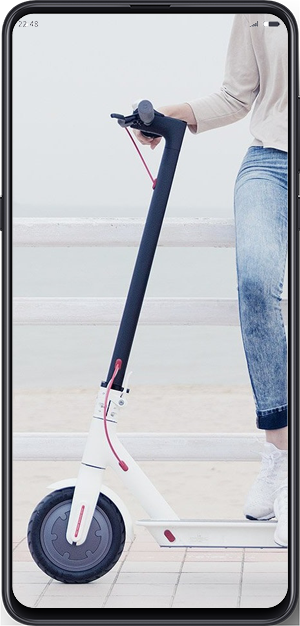

Посмотреть все с первого взгляда
Вся важная информация отображается сразу и четко видна, от Bluetooth до предупреждений о ремонте.
Одна кнопка, много применений
Нажмите кнопку, чтобы включить самокат, и удерживайте ее в течение трех секунд, чтобы выключить. Пока самокат включен, нажмите один раз, чтобы включить / выключить свет, или дважды нажмите, чтобы переключаться между режимами скорости.
3 скоростных режима
Легко переключайтесь между режимом ECO и стандартным режимом (D) и спортивный режим (S) двойным нажатием кнопки питания.
Мощность и скорость на дисплее
Оставшаяся мощность и текущая скорость отображаются в реальном времени, напоминая вам, когда нужно заряжать и безопасно ездить.
Сверхъяркая фара
Сверхъяркая фара для дополнительной безопасности при ночная езда.
Двойная тормозная система
Имеет задний вентилируемый дисковый тормоз диаметром 120 мм и передняя рекуперативная антиблокировочная тормозная система E-ABS для эффективного торможения.
Красные задние фонари для безопасности торможение
Красные задние фонари отчетливо мигают как предупреждение пешеходы и другие транспортные средства на дороге.
Вся важная информация отображается сразу и четко видна, от Bluetooth до предупреждений о ремонте.
Одна кнопка, много применений
Нажмите кнопку, чтобы включить самокат, и удерживайте ее в течение трех секунд, чтобы выключить. Пока самокат включен, нажмите один раз, чтобы включить / выключить свет, или дважды нажмите, чтобы переключаться между режимами скорости.
3 скоростных режима
Легко переключайтесь между режимом ECO и стандартным режимом (D) и спортивный режим (S) двойным нажатием кнопки питания.
Мощность и скорость на дисплее
Оставшаяся мощность и текущая скорость отображаются в реальном времени, напоминая вам, когда нужно заряжать и безопасно ездить.
Сверхъяркая фара
Сверхъяркая фара для дополнительной безопасности при ночная езда.
Двойная тормозная система
Имеет задний вентилируемый дисковый тормоз диаметром 120 мм и передняя рекуперативная антиблокировочная тормозная система E-ABS для эффективного торможения.
Красные задние фонари для безопасности торможение
Красные задние фонари отчетливо мигают как предупреждение пешеходы и другие транспортные средства на дороге.
Батарея дальнего действия 45 км,
путешествуйте дальше
Благодаря высокобезопасному литиевому аккумулятору 18650, емкостью 474 Втч, мощному источнику питания и эффективному ускорению, скутер может проехать до 45 км без подзарядки. Интеллектуальная система управления питанием предлагает шесть различных защитных измерения, и вы можете легко проверить состояние батареи через мобильное приложение.
Восстанавливает и регенерирует энергию для еще более длительного заряда
Чтобы продлить срок службы батареи, самокат преобразует и сохраняет кинетическую энергию во время ускорения в электричество. Он также оснащен системой рекуперативного торможения для дополнительной мощности. Это увеличивает система экстренного торможения и в то же время увеличивает срок службы батареи.
Благодаря высокобезопасному литиевому аккумулятору 18650, емкостью 474 Втч, мощному источнику питания и эффективному ускорению, скутер может проехать до 45 км без подзарядки. Интеллектуальная система управления питанием предлагает шесть различных защитных измерения, и вы можете легко проверить состояние батареи через мобильное приложение.
Восстанавливает и регенерирует энергию для еще более длительного заряда
Чтобы продлить срок службы батареи, самокат преобразует и сохраняет кинетическую энергию во время ускорения в электричество. Он также оснащен системой рекуперативного торможения для дополнительной мощности. Это увеличивает система экстренного торможения и в то же время увеличивает срок службы батареи.
Восстанавливает и регенерирует энергию
для еще более длительного заряда
Чтобы продлить срок службы батареи, самокат преобразует и сохраняет кинетическую энергию во время ускорения в электричество. Он также оснащен системой рекуперативного торможения для дополнительной мощности. Это увеличивает система экстренного торможения и в то же время увеличивает срок службы батареи.
Простые линии, безупречный вид. Линии скутера имеют аэродинамический дизайн, напоминающий спортивный автомобиль. Классный дизайн интегрирует эстетику гоночного автомобиля в вашу жизнь.
На доске самоката выгравирован логотип команды Mercedes-AMG Formula One, символизирующий стремление к совершенству.
Чтобы продлить срок службы батареи, самокат преобразует и сохраняет кинетическую энергию во время ускорения в электричество. Он также оснащен системой рекуперативного торможения для дополнительной мощности. Это увеличивает система экстренного торможения и в то же время увеличивает срок службы батареи.
Простые линии, безупречный вид. Линии скутера имеют аэродинамический дизайн, напоминающий спортивный автомобиль. Классный дизайн интегрирует эстетику гоночного автомобиля в вашу жизнь.
На доске самоката выгравирован логотип команды Mercedes-AMG Formula One, символизирующий стремление к совершенству.
- блютуз
- круиз контроль
- обновлениt прошивки
- статистика поездок
 - блокировка смартфоном
- блокировка смартфоном
